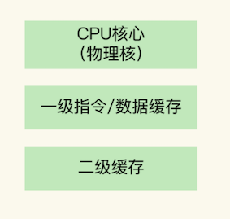
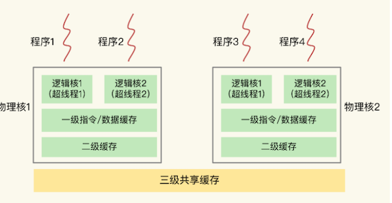
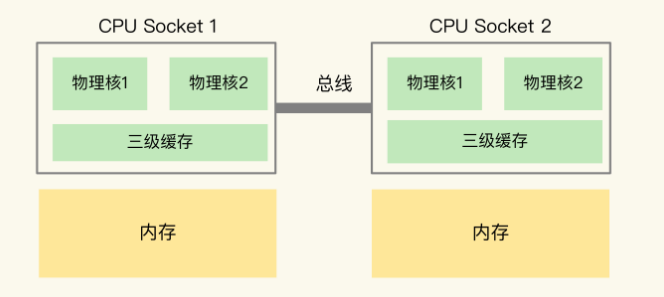
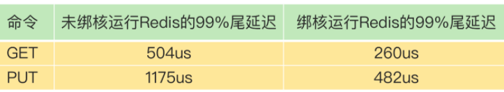
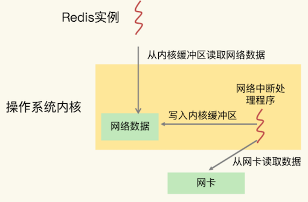
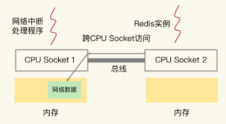
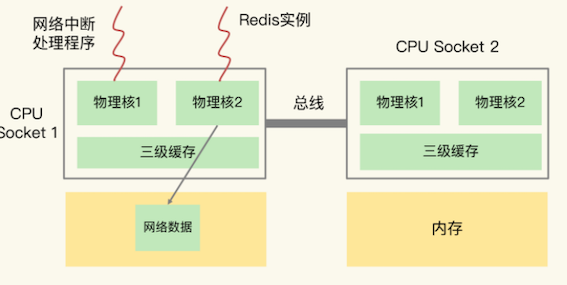

第二节 在多核CPU架构和NUMA架构下对redis进行优化配置
CPU 的多核架构以及多 CPU 架构，也会影响到 Redis 的性能。如果不了解 CPU 对 Redis 的影响，在对 Redis 的性能进行调优时，就可能会遗漏一些调优方法，不能把 Redis 的性能发挥到极限。
1、主流的 CPU 架构
一个 CPU 处理器中一般有多个运行核心，我们把一个运行核心称为一个物理核，每个物理核都可以运行应用程序。
每个物理核都拥有私有的一级缓存（Level 1 cache，简称 L1 cache），包括一级指令缓存和一级数据缓存，以及私有的二级缓存（Level 2 cache，简称 L2 cache）。
1-1 物理核的私有缓存
它其实是指缓存空间只能被当前的这个物理核使用，其他的物理核无法对这个核的缓存空间进行数据存取。我们来看一下 CPU 物理核的架构。

因为 L1 和 L2 缓存是每个物理核私有的，所以，当数据或指令保存在 L1、L2 缓存时，物理核访问它们的延迟不超过 10 纳秒，速度非常快。
那么，如果 Redis 把要运行的指令或存取的数据保存在 L1 和 L2 缓存的话，就能高速地访问这些指令和数据。
但是，这些L1 和 L2 缓存的大小受限于处理器的制造技术，一般只有 KB 级别，存不下太多的数据。
如果 L1、L2 缓存中没有所需的数据，应用程序就需要访问内存来获取数据。而应用程序的访存延迟一般在百纳秒级别，是访问 L1、L2 缓存的延迟的近 10 倍，不可避免地会对性能造成影响。
所以，不同的物理核还会共享一个共同的三级缓存（Level 3 cache，简称为 L3 cache）
L3 缓存能够使用的存储资源比较多，所以一般比较大，能达到几 MB 到几十 MB，这就能让应用程序缓存更多的数据。当 L1、L2 缓存中没有数据缓存时，可以访问 L3，尽可能避免访问内存。
3 缓存能够使用的存储资源比较多，所以一般比较大，能达到几 MB 到几十 MB，这就能让应用程序缓存更多的数据。当 L1、L2 缓存中没有数据缓存时，可以访问 L3，尽可能避免访问内存。
1-2 逻辑核
另外，现在主流的 CPU 处理器中，每个物理核通常都会运行两个超线程，也叫作逻辑核。同一个物理核的逻辑核会共享使用 L1、L2 缓存。
物理核和逻辑核，以及一级、二级缓存的关系。

在主流的服务器上，一个 CPU 处理器会有 10 到 20 多个物理核。
同时，为了提升服务器的处理能力，服务器上通常还会有多个 CPU 处理器（也称为多 CPU Socket），每个处理器有自己的物理核（包括 L1、L2 缓存），L3 缓存，以及连接的内存，同时，不同处理器间通过总线连接。

在多 CPU 架构上，应用程序可以在不同的处理器上运行
Redis 可以先在 Socket 1 上运行一段时间，然后再被调度到 Socket 2 上运行。
但是，有个地方需要你注意一下：如果应用程序先在一个 Socket 上运行，并且把数据保存到了内存，然后被调度到另一个 Socket 上运行，此时，应用程序再进行内存访问时，就需要访问之前 Socket 上连接的内存，这种访问属于远端内存访问。和访问 Socket 直接连接的内存相比，远端内存访问会增加应用程序的延迟。
1-3 Non-Uniform Memory Access，NUMA 架构
在多 CPU 架构下，一个应用程序访问所在 Socket 的本地内存和访问远端内存的延迟并不一致，所以，我们也把这个架构称为非统一内存访问架构（Non-Uniform Memory Access，NUMA 架构）。
们就知道了主流的 CPU 多核架构和多 CPU 架构，我们来简单总结下 CPU 架构对应用程序运行的影响。
- L1、L2 缓存中的指令和数据的访问速度很快，所以，充分利用 L1、L2 缓存，可以有效缩短应用程序的执行时间；
- 在 NUMA 架构下，如果应用程序从一个 Socket 上调度到另一个 Socket 上，就可能会出现远端内存访问的情况，这会直接增加应用程序的执行时间
2、CPU 多核对 Redis 性能的影响
在一个 CPU 核上运行时，应用程序需要记录自身使用的软硬件资源信息（例如栈指针、CPU 核的寄存器值等），我们把这些信息称为运行时信息。
同时，应用程序访问最频繁的指令和数据还会被缓存到 L1、L2 缓存上，以便提升执行速度。
但是，在多核 CPU 的场景下，一旦应用程序需要在一个新的 CPU 核上运行，那么，运行时信息就需要重新加载到新的 CPU 核上。而且，新的 CPU 核的 L1、L2 缓存也需要重新加载数据和指令，这会导致程序的运行时间增加。
2-1 CPU 环境下对 Redis 性能进行调优
目需求是要对 Redis 的 99% 尾延迟进行优化，要求 GET 尾延迟小于 300 微秒，PUT 尾延迟小于 500 微秒。
99% 尾延迟
我们把所有请求的处理延迟从小到大排个序，99% 的请求延迟小于的值就是 99% 尾延迟。比如说，我们有 1000 个请求，假设按请求延迟从小到大排序后，第 991 个请求的延迟实测值是 1ms，而前 990 个请求的延迟都小于 1ms，所以，这里的 99% 尾延迟就是 1ms。
我们使用 GET/PUT 复杂度为 O(1) 的 String 类型进行数据存取，同时关闭了 RDB 和 AOF，而且，Redis 实例中没有保存集合类型的其他数据，也就没有 bigkey 操作，避免了可能导致延迟增加的许多情况
即使这样，我们在一台有 24 个 CPU 核的服务器上运行 Redis 实例，GET 和 PUT 的 99% 尾延迟分别是 504 微秒和 1175 微秒，明显大于我们设定的目标。
检测了 Redis 实例运行时的服务器 CPU 的状态指标值，这才发现，CPU 的 context switch 次数比较多。
context switch
context switch 是指线程的上下文切换，这里的上下文就是线程的运行时信息。
在 CPU 多核的环境中，一个线程先在一个 CPU 核上运行，之后又切换到另一个 CPU 核上运行，这时就会发生 context switch。
多核CPU运行慢的原因
1、一个核运行，需要记录运行到哪里了，切换到另一个核的时候，需要把记录的运行时信息同步到另一个核上。
2、另一个 CPU 核上的 L1、L2 缓存中，并没有 Redis 实例之前运行时频繁访问的指令和数据，所以，这些指令和数据都需要重新从 L3 缓存，甚至是内存中加载。这个重新加载的过程是需要花费一定时间的。
当 context switch 发生后，Redis 主线程的运行时信息需要被重新加载到另一个 CPU 核上，而且，此时，另一个 CPU 核上的 L1、L2 缓存中，并没有 Redis 实例之前运行时频繁访问的指令和数据，所以，这些指令和数据都需要重新从 L3 缓存，甚至是内存中加载。这个重新加载的过程是需要花费一定时间的
而且，Redis 实例需要等待这个重新加载的过程完成后，才能开始处理请求，所以，这也会导致一些请求的处理时间增加。
如果在 CPU 多核场景下，Redis 实例被频繁调度到不同 CPU 核上运行的话，那么，对 Redis 实例的请求处理时间影响就更大了。每调度一次，一些请求就会受到运行时信息、指令和数据重新加载过程的影响，这就会导致某些请求的延迟明显高于其他请求。分析到这里，我们就知道了刚刚的例子中 99% 尾延迟的值始终降不下来的原因。
所以，我们要避免 Redis 总是在不同 CPU 核上来回调度执行。于是，我们尝试着把 Redis 实例和 CPU 核绑定了，让一个 Redis 实例固定运行在一个 CPU 核上。
我们可以使用taskset 命令把一个程序绑定在一个核上运行。
比如说，我们执行下面的命令，就把 Redis 实例绑在了 0 号核上，其中，“-c”选项用于设置要绑定的核编号。
taskset -c 0 ./redis-server
绑定以后，我们进行了测试。我们发现，Redis 实例的 GET 和 PUT 的 99% 尾延迟一下子就分别降到了 260 微秒和 482 微秒，达到了我们期望的目标。
我们来看一下绑核前后的 Redis 的 99% 尾延迟。
和只绑一个逻辑核相比，把 Redis 实例和物理核绑定，可以让主线程、子进程、后台线程共享使用 2 个逻辑核，可以在一定程度上缓解 CPU 资源竞争。
但是，因为只用了 2 个逻辑核，它们相互之间的 CPU 竞争仍然还会存在。如果你还想进一步减少 CPU 竞争，我再给你介绍一种方案。

在 CPU 多核的环境下，通过绑定 Redis 实例和 CPU 核，可以有效降低 Redis 的尾延迟。当然，绑核不仅对降低尾延迟有好处，同样也能降低平均延迟、提升吞吐率，进而提升 Redis 性能。
3、CPU 的 NUMA 架构对 Redis 性能的影响
在实际应用 Redis 时，为了提升 Redis 的网络性能，把操作系统的网络中断处理程序和 CPU 核绑定。
这个做法可以避免网络中断处理程序在不同核上来回调度执行，的确能有效提升 Redis 的网络处理性能。
但是，网络中断程序是要和 Redis 实例进行网络数据交互的，一旦把网络中断程序绑核后，我们就需要注意 Redis 实例是绑在哪个核上了，这会关系到 Redis 访问网络数据的效率高低。
我们先来看下 Redis 实例和网络中断程序的数据交互：
- 网络中断处理程序从网卡硬件中读取数据，并把数据写入到操作系统内核维护的一块内存缓冲区
- 内核会通过 epoll 机制触发事件，通知 Redis 实例，Redis 实例再把数据从内核的内存缓冲区拷贝到自己的内存空间，如下图所示：

那么，在 CPU 的 NUMA 架构下，当网络中断处理程序、Redis 实例分别和 CPU 核绑定后，就会有一个潜在的风险：如果网络中断处理程序和 Redis 实例各自所绑的 CPU 核不在同一个 CPU Socket 上，那么，Redis 实例读取网络数据时，就需要跨 CPU Socket 访问内存，这个过程会花费较多时间。

图中的网络中断处理程序被绑在了 CPU Socket 1 的某个核上，而 Redis 实例则被绑在了 CPU Socket 2 上。
- 此时，网络中断处理程序读取到的网络数据，被保存在 CPU Socket 1 的本地内存中，
- 当 Redis 实例要访问网络数据时，就需要 Socket 2 通过总线把内存访问命令发送到 Socket 1 上，进行远程访问，时间开销比较大。
和访问 CPU Socket 本地内存相比，跨 CPU Socket 的内存访问延迟增加了 18%，这自然会导致 Redis 处理请求的延迟增加。
所以，为了避免 Redis 跨 CPU Socket 访问网络数据，我们最好把网络中断程序和 Redis 实例绑在同一个 CPU Socket 上，这样一来，Redis 实例就可以直接从本地内存读取网络数据了 ，如下图所示：

需要注意的是
在 CPU 的 NUMA 架构下，对 CPU 核的编号规则，并不是先把一个 CPU Socket 中的所有逻辑核编完，再对下一个 CPU Socket 中的逻辑核编码，而是先给每个 CPU Socket 中每个物理核的第一个逻辑核依次编号，再给每个 CPU Socket 中的物理核的第二个逻辑核依次编号。
假设有 2 个 CPU Socket，每个 Socket 上有 6 个物理核，每个物理核又有 2 个逻辑核，总共 24 个逻辑核。
我们可以执行 lscpu 命令，查看到这些核的编号：
lscpu
Architecture: x86_64
...
NUMA node0 CPU(s): 0-5,12-17
NUMA node1 CPU(s): 6-11,18-23
...
NUMA node0 的 CPU 核编号是 0 到 5、12 到 17。
其中，0 到 5 是 node0 上的 6 个物理核中的第一个逻辑核的编号，12 到 17 是相应物理核中的第二个逻辑核编号。
NUMA node1 的 CPU 核编号规则和 node0 一样。
所以，在绑核时，我们一定要注意，不能想当然地认为第一个 Socket 上的 12 个逻辑核的编号就是 0 到 11。否则，网络中断程序和 Redis 实例就可能绑在了不同的 CPU Socket 上。
比如说，如果我们把网络中断程序和 Redis 实例分别绑到编号为 1 和 7 的 CPU 核上，此时，它们仍然是在 2 个 CPU Socket 上，Redis 实例仍然需要跨 Socket 读取网络数据。
所以，你一定要注意 NUMA 架构下 CPU 核的编号方法，这样才不会绑错核。
- 在 CPU 多核的场景下，用
taskset命令把Redis实例和一个核绑定，可以减少 Redis 实例在不同核上被来回调度执行的开销，避免较高的尾延迟； - 在多 CPU 的 NUMA 架构下，如果你对网络中断程序做了绑核操作，建议你同时把 Redis 实例和网络中断程序绑在同一个 CPU Socket 的不同核上，这样可以避免 Redis 跨 Socket 访问内存中的网络数据的时间开销。
4、绑核的风险和解决方案
- Redis 除了主线程以外，还有用于 RDB 生成和 AOF 重写的子进程
- Redis 的后台线程
当我们把 Redis 实例绑到一个 CPU 逻辑核上时，就会导致子进程、后台线程和 Redis 主线程竞争 CPU 资源，一旦子进程或后台线程占用 CPU 时，主线程就会被阻塞，导致 Redis 请求延迟增加。
针对这种情况，分别是一个 Redis 实例对应绑一个物理核和优化 Redis 源码。
4-1 一个 Redis 实例对应绑一个物理核
在给 Redis 实例绑核时，我们不要把一个实例和一个逻辑核绑定，而要和一个物理核绑定，也就是说，把一个物理核的 2 个逻辑核都用上。
我们还是以刚才的 NUMA 架构为例，NUMA node0 的 CPU 核编号是 0 到 5、12 到 17。其中，编号 0 和 12、1 和 13、2 和 14 等都是表示一个物理核的 2 个逻辑核。
所以，在绑核时，我们使用属于同一个物理核的 2 个逻辑核进行绑核操作。
例如，我们执行下面的命令，就把 Redis 实例绑定到了逻辑核 0 和 12 上，而这两个核正好都属于物理核 1。
taskset -c 0,12 ./redis-server
和只绑一个逻辑核相比，把 Redis 实例和物理核绑定，可以让主线程、子进程、后台线程共享使用 2 个逻辑核，可以在一定程度上缓解 CPU 资源竞争。
但是，因为只用了 2 个逻辑核，它们相互之间的 CPU 竞争仍然还会存在。如果你还想进一步减少 CPU 竞争，我再给你介绍一种方案。
4-2 优化 Redis 源码
这个方案就是通过修改 Redis 源码，把子进程和后台线程绑到不同的 CPU 核上。
接下来，我先介绍一下通用的做法，然后，再具体说说可以把这个做法对应到 Redis 的哪部分源码中。
通过编程实现绑核时，要用到操作系统提供的 1 个数据结构 cpu_set_t 和 3 个函数 CPU_ZERO、CPU_SET 和 sched_setaffinity，我先来解释下它们。
cpu_set_t数据结构：是一个位图，每一位用来表示服务器上的一个 CPU 逻辑核。CPU_ZERO函数：以cpu_set_t结构的位图为输入参数，把位图中所有的位设置为 0。CPU_SET函数：以 CPU 逻辑核编号和cpu_set_t位图为参数，把位图中和输入的逻辑核编号对应的位设置为 1。sched_setaffinity函数：以进程 / 线程 ID 号和cpu_set_t为参数，检查cpu_set_t中哪一位为 1，就把输入的 ID 号所代表的进程 / 线程绑在对应的逻辑核上。
怎么在编程时把这三个函数结合起来实现绑核呢？
- 第一步：创建一个
cpu_set_t结构的位图变量； - 第二步：使用
CPU_ZERO函数，把cpu_set_t结构的位图所有的位都设置为 0； - 第三步：根据要绑定的逻辑核编号，使用
CPU_SET函数，把cpu_set_t结构的位图相应位设置为 1； - 第四步：使用
sched_setaffinity函数，把程序绑定在cpu_set_t结构位图中为 1 的逻辑核上。
先说后台线程。为了让你更好地理解编程实现绑核，你可以看下这段示例代码，它实现了为线程绑核的操作：
//线程函数
void worker(int bind_cpu){
cpu_set_t cpuset; //创建位图变量
CPU_ZERO(&cpu_set); //位图变量所有位设置0
CPU_SET(bind_cpu, &cpuset); //根据输入的bind_cpu编号，把位图对应为设置为1
sched_setaffinity(0, sizeof(cpuset), &cpuset); //把程序绑定在cpu_set_t结构位图中为1的逻辑核
//实际线程函数工作
}
int main(){
pthread_t pthread1
//把创建的pthread1绑在编号为3的逻辑核上
pthread_create(&pthread1, NULL, (void *)worker, 3);
}
对于 Redis 来说，它是在 bio.c 文件中的 bioProcessBackgroundJobs 函数中创建了后台线程。bioProcessBackgroundJobs 函数类似于刚刚的例子中的 worker 函数，在这个函数中实现绑核四步操作，就可以把后台线程绑到和主线程不同的核上了。
和给线程绑核类似，当我们使用 fork 创建子进程时，也可以把刚刚说的四步操作实现在 fork 后的子进程代码中，示例代码如下：
int main(){
//用fork创建一个子进程
pid_t p = fork();
if(p < 0){
printf(" fork error\n");
}
//子进程代码部分
else if(!p){
cpu_set_t cpuset; //创建位图变量
CPU_ZERO(&cpu_set); //位图变量所有位设置0
CPU_SET(3, &cpuset); //把位图的第3位设置为1
sched_setaffinity(0, sizeof(cpuset), &cpuset); //把程序绑定在3号逻辑核
//实际子进程工作
exit(0);
}
...
}
对于 Redis 来说，生成 RDB 和 AOF 日志重写的子进程分别是下面两个文件的函数中实现的。
- rdb.c 文件：rdbSaveBackground 函数；
- aof.c 文件：rewriteAppendOnlyFileBackground 函数。
这两个函数中都调用了 fork 创建子进程，所以，我们可以在子进程代码部分加上绑核的四步操作。
使用源码优化方案，我们既可以实现 Redis 实例绑核，避免切换核带来的性能影响，还可以让子进程、后台线程和主线程不在同一个核上运行，避免了它们之间的 CPU 资源竞争。相比使用 taskset 绑核来说，这个方案可以进一步降低绑核的风险。
5、本节小结
- 多核 CPU 架构，以及 NUMA 架构。
- 在多核 CPU 架构下，Redis 如果在不同的核上运行，就需要频繁地进行上下文切换，这个过程会增加 Redis 的执行时间，客户端也会观察到较高的尾延迟了。所以，建议你在 Redis 运行时，把实例和某个核绑定，这样，就能重复利用核上的 L1、L2 缓存，可以降低响应延迟。
- 为了提升 Redis 的网络性能，我们有时还会把网络中断处理程序和 CPU 核绑定。
- 如果服务器使用的是 NUMA 架构，Redis 实例一旦被调度到和中断处理程序不在同一个 CPU Socket，就要跨 CPU Socket 访问网络数据，这就会降低 Redis 的性能。
- 建议你把 Redis 实例和网络中断处理程序绑在同一个 CPU Socket 下的不同核上，这样可以提升 Redis 的运行性能。
虽然绑核可以帮助 Redis 降低请求执行时间，但是，除了主线程，Redis 还有用于 RDB 和 AOF 重写的子进程，以及 4.0 版本之后提供的用于惰性删除的后台线程。
当 Redis 实例和一个逻辑核绑定后，这些子进程和后台线程会和主线程竞争 CPU 资源，也会对 Redis 性能造成影响。所以，我给了你两个建议：
- 如果你不想修改 Redis 代码，可以把按一个 Redis 实例一个物理核方式进行绑定，这样，Redis 的主线程、子进程和后台线程可以共享使用一个物理核上的两个逻辑核。
- Redis 的源码，就可以在源码中增加绑核操作，把子进程和后台线程绑到不同的核上，这样可以避免对主线程的 CPU 资源竞争
- Redis 6.0 出来后，可以支持 CPU 核绑定的配置操作了
5-1 亮点&要点
- 主流的CPU架构，主要有多核CPU架构和NUMA架构两个架构
- 多核CPU架构： 多个物理核，各物理核使用私有的1、2级缓存，共享3级缓存。物理核可包含2个超线程，称为逻辑核
- NUMA架构： 一个服务器上多个cpu，称为CPU Socket，每个cpu socker存在多个物理核。每个socket通过总线连接，并且有用私有的内存空间
- cpu架构：一个cpu一般拥有多个物理核，每个物理核都拥有私有的一级缓存，二级缓存。三级缓存是各物理核共享的缓存空间。而物理核又可以分为多个超线程，称为逻辑核，同一个物理核的逻辑核会共享使用 L1、L2 缓存。
- 一级缓存和二级缓存访问延迟不超过10纳秒，但空间很小，只是KB单位。而应用程序访问内存延迟是百纳秒级别，基本上是一二级缓存的10倍
- 不同的物理核还会共享一个共同的三级缓存，三级缓存空间比较多，为几到几十MB，当 L1、L2 缓存中没有数据缓存时，可以访问 L3，尽可能避免访问内存。
- 多核CPU运行redis实例，会导致context switch，导致增加延迟，可以通过taskset 命令把redis进程绑定到某个cup物理核上。
- NUMA架构运行redis实例，如果网络中断程序和redis实例运行在不同的socket上，就需要跨 CPU Socket 访问内存，这个过程会花费较多时间。
- 绑核的风险和解决方案：
- 一个 Redis 实例对应绑一个物理核 ： 将redis服务绑定到一个物理核上，而不是一个逻辑核上，如
taskset -c 0,12 ./redis-server - 优化 Redis 源码。
- 一个 Redis 实例对应绑一个物理核 ： 将redis服务绑定到一个物理核上，而不是一个逻辑核上，如